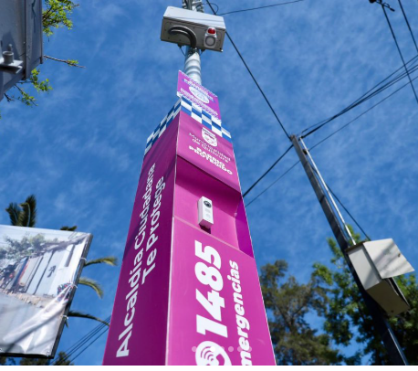
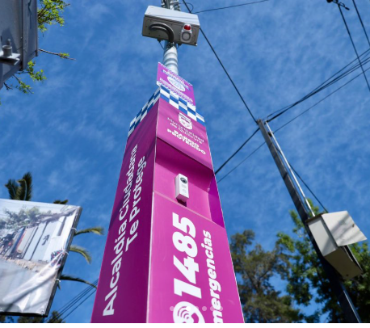
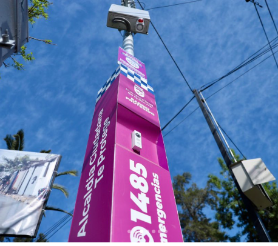

¡Alcaldía Ciudadana que resguarda la seguridad de nuestras vecinas y vecinos!
Quilicura Como la Queremos
Quilicura Como la Queremos

Somos un programa de carácter confidencial que apoya a las familias para que niños, niñas y adolescentes crezcan en un entorno seguro, alejados de conductas de riesgo. Contamos con tres dispositivos de intervención:
Encuéntranos en: Del Sembrador Nº530
Solicita tu atención en:
📞 +56 9 8123 3915
📞 +56 9 9481 0652
| Programa Senda Previene | Centro de las Mujeres |
| Programa Lazos | Somos Barrio |
Coordinación de dispositivos móviles de disuasión del delito, atención de emergencias y patrullajes focalizados 24/7.
Somos una dirección municipal dedicada a la prevención, vigilancia, respuesta temprana y acompañamiento comunitario para construir una comuna más segura, organizada y solidaria.

Fomentamos la participación comunitaria generando iniciativas de prevención y recuperación de barrios. Organizamos Comités de Seguridad Ciudadana, con acompañamiento permanente.

Dirección: Ignacio Serrano Nº557
Correo: articulacionterritorial.seguridad@quilicura.cl


Atención psicosocial a personas víctimas de violencia, delitos o vulneración de derechos. Asesoramos a través de redes de apoyo municipal.
Dirección: Ignacio Serrano Nº557
WhatsApp: +569 3283 8516 / 2 3384 2092
Horario: Lunes a jueves de 08:30 a 17:30 horas, viernes de 08:30 a 16:30 horas.
Acercamos servicios municipales a la comunidad del sur de Quilicura. Dotación permanente de Seguridad Pública.
Dirección: Camino del Cerro Nº1676
Teléfono: 2 2944 4739